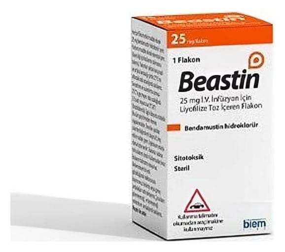

Beastin 25 mg I.V. İnfüzyon İçin Liyofilize Toz İçeren Flakon ,1 Adet

Ne için kullanılır
KT · Bölüm 1BEASTİN içerisinde bendamustin hidroklorür adı verilen bir etkin maddeyi içeren flakondur. 10R amber renkli cam içerisinde beyaz renkte liyofilize tozdur.
BEASTİN bazı kanser tiplerinin tedavisinde kullanılan bir ilaçtır (sitotoksik ilaç). BEASTİN aşağıda yer alan kanser tiplerinde tek başına (monoterapi) veya diğer ilaçlarla birlikte kullanılabilir:
Kronik lenfositik lösemi hastalığınızda, Rituksimab içeren tedaviler esnasında veya sonrasında progresyon gelişmiş (ilerlemiş) olan non hodgkin lenfoma hastalığının tedavisinde, İlk seri tedavi sonrası yanıtsızlık veya tekrarlayan otolog kök hücre nakli için uygun olmayan multipl miyelom olgularının ikinci sıra tedavisinde